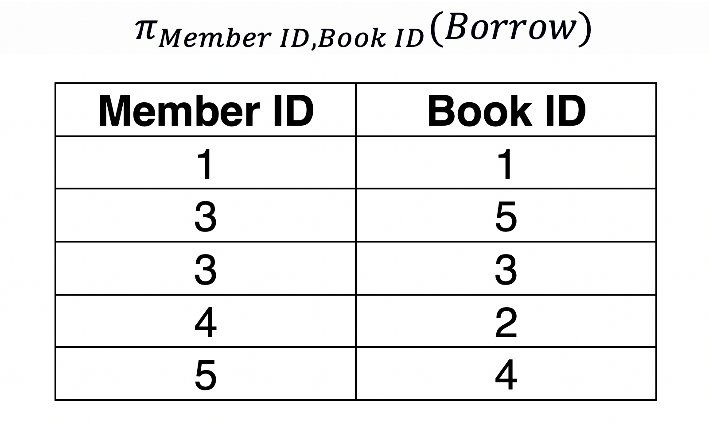

Relational Algebra¶
A Quick Guide to Relational Algebra Operators in DBMS
Definition¶
Relational algebra is a family of algebras with a well-founded semantics used for modelling the data stored in relational databases, and defining queries on it.
Database management systems must have a query language so that the users can access the data stored in the database.
Relational algebra (RA) is a procedural query language where the user tells the system to carry out a set of operations to obtain the desired results

Operators¶
Projection¶
Projection is used to select the required columns of data from a relation. Note that projection removes duplicate data (tuples).
Query: Member IDs of members who have borrowed books.
SELECT DISTINCT member_id FROM borrow;

Query: Member IDs of members and the Book IDs of the books they have borrowed books.
SELECT DISTINCT member_id,book_id FROM borrow;

Selection¶
Selection is used to select the required tuples of data from a relation. During selection, we can specify certain conditions that the data must satisfy.
Query: Rename the Member relation as LibraryMember
SELECT DISTINCT member_id,book_id FROM borrow;

Rename¶
RENAME - altering the attribute name of the resultant relation or to give a specific name to the resultant relation.
Remove confusion if two or more relations have attributes with the same name
Provide user-friendly names for attributes, especially when interfacing with reporting engines
Provide a convenient way to change the relation definition and still be backward compatible
In SQL we would translate the RENAME operator using the SQL ‘AS’ statement:
SELECT dob AS ‘Birth_Date’, empno AS ‘Employee_Number’ FROM EMPLOYEE
Cross Product¶
Cross product - combining data from two different relations into one relation. If we consider two relations; A with n tuples and B with m tuples, A ✕ B will consist of n.m tuples.
Query: Member ✕ Borrow
SELECT * FROM member,borrow;
Union¶
Union is very similar to that of set theory. Both the relations must have the same set of attributes.
Query: Book IDs of the books borrowed by Charlie and Mike.
SELECT book_id FROM member natural join borrow where name='Charlie' UNION
SELECT book_id FROM member natural join borrow where name='Mike';

Intersect¶
Query: Member IDs of the members who have borrowed both the books “Fences” and “Inheritance”.
SELECT borrow.member_id FROM borrow
JOIN book ON book.book_id = borrow.book_id
WHERE name IN ('Fences','Inheritance')
GROUP BY member_id;
Natural Join¶
Natural join between two or more relations will result in all the combination of tuples where they have equal values for the common attribute.
SELECT * FROM member NATURAL JOIN borrow;